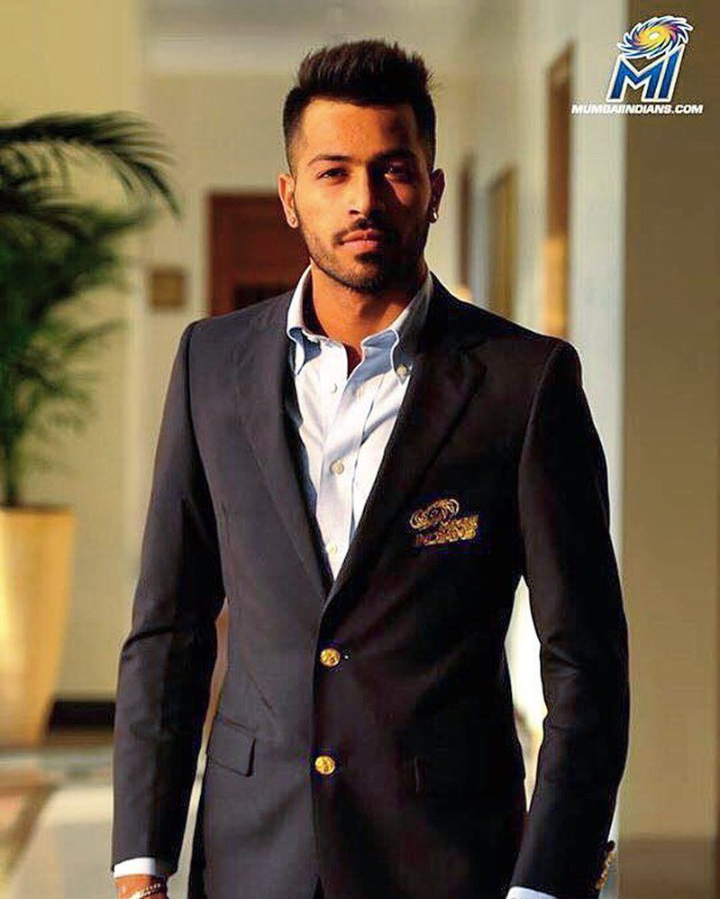
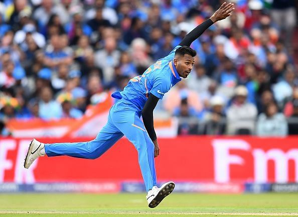

HARDIK PANDYA
Personal Life
Hardik Pandya was born on 11 October 1993 in Surat, Gujarat. His father, Himanshu Pandya, ran a small car finance business in Surat which he shut down and shifted to Vadodara when Hardik was five; he did so in order to facilitate his sons with better cricket training facilities. He enrolled his two sons (Hardik and Krunal) into Kiran More's cricket academy in Vadodara. Financially weak, the Pandya family lived in a rented apartment in Gorwa, with the brothers using a second-hand car to travel to the cricket ground.Hardik studied at the MK High School until ninth grade before dropping out to focus on cricket.
Hardik made steady progress in junior-level cricket and, according to Krunal, "won a lot of matches single-handedly" in club cricket.In an interview with the Indian Express, Hardik revealed that he was dropped from his state age-group teams due to his "attitude problems." He added that he was "just an expressive child" who does not "like to hide his emotions.
According to his father, Hardik was a leg spinner until the age of 18 and turned to fast bowling at the insistence of the Baroda coach Sanath Kumar.Pandya got engaged to an Indian-based Serbian dancer and actress Nataša Stanković on 1 January 2020. On 30 July, their first child, Agastya Pandya, was born.
Career

In the 2015 season of the Indian Premier League, he scored a quick fire 21 runs IPL Career
Hardik began his IPL career in 2015 with Mumbai Indians. His all-round performances with the MI franchise earned him a spot in the Indian national team. Hardik's IPL career has been one of the most impressive ones so far. He is known for scoring quick runs in crucial moments.
In 2017, against RPS, it was the last over in Mumbai Indians’ innings batting first and Hardik Pandya smashed 30 runs in that one against bowler Ashok Dinda, making it a record, although later, Mumbai lost the match.
Hardik Pandya was retained by the Mumbai Indians franchise in the 2018 IPL auction for a whopping amount of Rs. 11 crores.
Later on against Kolkata Knight Riders, in a must-win situation for Mumbai Indians to remain in the race for the top 4 teams, he scored a quickfire 61 off 31 balls to win the match for his side and earn his second man of the match award in the season.
Pandya was awarded the Man of the Match trophy in the 2nd T20I when the Indian batsman hailed Natarajan for his bowling exploits against Australia in his debut series.
IPL Career
Hardik began his IPL career in 2015 with Mumbai Indians. His all-round performances with the MI franchise earned him a spot in the Indian national team. Hardik's IPL career has been one of the most impressive ones so far. He is known for scoring quick runs in crucial moments.
In 2017, against RPS, it was the last over in Mumbai Indians’ innings batting first and Hardik Pandya smashed 30 runs in that one against bowler Ashok Dinda, making it a record, although later, Mumbai lost the match.
Hardik Pandya was retained by the Mumbai Indians franchise in the 2018 IPL auction for a whopping amount of Rs. 11 crores.
T20I Career
Hardik Pandya made his Twenty20 International debut for India on 27 January 2016 against the Australian side in Adelaide. Pandya had a horror start to the match as he bowled 5 wides in his first international over and went for 19 runs. However, he came back in sharply and scalped two wickets by only giving 18 runs in his last 3 overs.
He has been part of India's T20 WC squad in 2016 where he bowled the final over against Bangladesh and defended 2 runs off the final 3 balls
ODI Career
On 16 October 2016, Pandya made his One Day International (ODI) debut against New Zealand at Dharamsala. Hardik was awarded Man of the Match on his debut. He thus became only the fourth Indian to be named player of the match on ODI debut after Sandeep Patil, Mohit Sharma and K. L. Rahul. Hardik's performances in the 2017 Champions Trophy were lauded by the entire cricketing world. Following his 2017 performances,Hardik was selected in the ODI XI of the year 2017 by Cricinfo.
Hardik Pandya was also a part of the 2019 WC squad which reached till the semi-finals of the tournament.
Test Career
For his inaugural Test call-up, Pandya was included as a batsman for England's tour of India in late 2016. However he had to miss out because he injured himself while training in the nets at the PCA Stadium. However, he got a second chance after he was named in the Indian cricket squad for the Sri Lanka tour in July 2017.
He made his first Test debut on 26 July in Galle. He scored his maiden Test century in the same series and also became the first Indian batsman to score a Test century just before lunch. He also has the record for scoring the most runs in a single over of a Test innings for India (26 runs) to his name.
Career Statistics
| competion |
test |
ODI |
T20I |
| Matches |
11 |
57 |
38 |
| Runs Scored |
532 |
1167 |
310 |
| Wickets |
17 |
55 |
38 |
| Batting Average |
31.29 |
34.32 |
16.31 |
| Bowling Average |
31.05 |
40.34 |
25.68 |
Records
- First Indian to take 4 wickets and score above 30 runs in the same T20I match.
- Fourth Indian to be named player of the match on ODI debut.
- Most runs in a single over of a Test innings for India (26 runs).
- First Indian batsman to score a Test century just before lunch.
Awards and Accolades
ODI XI of the year 2017 by Cricinfo